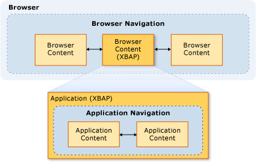
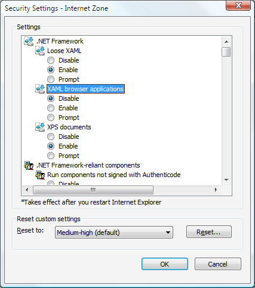

Безопасность (WPF)
При разработке Windows Presentation Foundation (WPF) автономных приложений и приложений, размещенных в веб-браузере, необходимо учитывать модель безопасности. WPF Автономные приложения выполняются с неограниченными разрешениями ( CAS FullTrust набор разрешений), если развертываются с помощью установщика Windows (MSI), XCopy или ClickOnce. Развертывание автономных приложений WPF с частичным доверием с помощью ClickOnce не поддерживается. Тем не менее, полным доверием ведущего приложения можно создать с частичным доверием AppDomain с помощью модели надстроек платформы .NET Framework. Дополнительные сведения см. в разделе Общие сведения о надстройках WPF.
WPF Браузерные приложения Windows Internet Explorer или Firefox, и может быть либо XAML-приложения браузера (XBAP) или свободными XAML документов, Дополнительные сведения см. в разделе Обзор приложений браузера XAML WPF.
WPF Браузерные приложения выполняются в песочнице с частичным доверием, по умолчанию, который ограничен по умолчанию CAS Internet набора разрешений зоны. Это позволяет эффективно изолировать WPF Браузерные приложения от клиентского компьютера так же, что можно ожидать изолируются обычные веб-приложения. Приложение XBAP может повысить привилегии вплоть до полного доверия в зависимости от зоны безопасности URL-адреса развертывания и конфигурации безопасности клиента. Дополнительные сведения см. в разделе Безопасность частичного доверия в WPF.
В этом разделе рассматривается модель безопасности для Windows Presentation Foundation (WPF) автономных приложений и приложений, размещенных в веб-браузере.
В этом разделе содержатся следующие подразделы.
Параметры безопасности программного обеспечения для просмотра веб-страниц
Элемент управления WebBrowser и элементы управления функциями
Отключение сборок APTCA для клиентских приложений с частичным доверием
Ресурсы для разработки приложений WPF, обеспечивающих безопасность
Безопасная навигация
Для XBAP, WPF различает два типа навигации: приложения и браузера.
Навигация в приложении — это навигация между элементами содержимого в пределах приложения, размещенного в браузере. Навигация в браузере — это навигация, изменяющая содержимое и URL-адрес расположения самого браузера. Связь между Навигация в приложении (как правило, XAML) и навигацией в браузере (как правило, HTML) показана на следующем рисунке:

Тип содержимого, которое считается безопасным для XBAP для перехода к главным образом определяется использование Навигация в приложении или в браузере.
Безопасность навигации в приложениях
Навигация в приложении считается безопасным, если его можно с помощью пакета URI, который поддерживает четыре типа содержимого:
| Тип содержимого | Описание | Пример URI |
|---|---|---|
| Ресурс | Файлы, добавленные в проект с типом сборки ресурсов. | pack://application:,,,/MyResourceFile.xaml |
| Content | Файлы, добавленные в проект с типом сборки содержимого. | pack://application:,,,/MyContentFile.xaml |
| Исходный веб-сайт | Файлы, добавленные в проект с типом сборки None. | pack://siteoforigin:,,,/MySiteOfOriginFile.xaml |
| Код приложения | Ресурсы XAML, имеющие скомпилированный код программной части. -или- Файлы XAML, которые добавляются в проект с типом сборки страницы. |
pack://application:,,,/MyResourceFile .xaml |
Note
Дополнительные сведения о файлах данных приложения и пакет Идентификаторы URI, см. в разделе ресурса приложения WPF, содержимое и файлы данных.
Файлы этих типов содержимого поддерживают навигацию, выполняемую пользователем или программно.
Навигация, выполняемая пользователем. Пользователь выполняет переходы, щелкая Hyperlink элемент.
Программная навигация. Приложение выполняет переходы без участия пользователя, например, установив NavigationWindow.Source свойство.
Безопасность навигации в браузере
Навигация в браузере считается безопасной только при выполнении следующих условий.
Навигация, выполняемая пользователем. Пользователь выполняет переходы, щелкая Hyperlink элемент, расположенный в главном NavigationWindow, но не во вложенный Frame.
Зона. Содержимое, к которому выполняется переход, находится в Интернете или в локальной интрасети.
Протокол. Используемый протокол является либо http, https, файл, или mailto.
Если XBAP пытается перейти к содержимому таким способом, который не соответствует этим условиям, SecurityException возникает исключение.
Параметры безопасности программного обеспечения для просмотра веб-страниц
Параметры безопасности компьютера определяют уровень доступа, который предоставляется программному обеспечению для просмотра веб-страниц. Веб-обозревателя включает любое приложение или компонент, который использует WinINet или UrlMon API, включая Internet Explorer и PresentationHost.exe.
Internet Explorer предоставляет механизм, по которому можно настроить функции, которые разрешены для выполнения в Internet Explorer, включая следующие:
Всему компоненты .NET
элементы управления ActiveX и подключаемые модули;
Загрузки
Скрипты
проверка подлинности пользователя.
Набор функциональных возможностей, которая может быть защищена таким образом настраивается для каждой зоны для Internet, интрасети, Надежные узлы, и Ограниченные узлы зоны. Ниже приведена процедура для настройки параметров безопасности.
Откройте панель управления.
Нажмите кнопку сеть и Интернет и нажмите кнопку обозревателя.
Откроется диалоговое окно «Свойства веб-обозревателя».
На безопасности выберите зону для настройки параметров безопасности.
Нажмите кнопку другой кнопки.
Параметры безопасности откроется диалоговое окно, и можно настроить параметры безопасности для выбранной зоны.

Note
К диалоговому окну "Свойства обозревателя" можно также перейти из Internet Explorer. Нажмите кнопку средства и нажмите кнопку обозревателя.
Начиная с Windows Internet Explorer 7, включены следующие параметры безопасности специально для .NET Framework:
Свободный XAML. Элементы управления ли Internet Explorer можно переходить к и свободный XAML файлов. (Варианты: "Включить", "Отключить" и "Запрашивать".)
XAML-приложения браузера. Элементы управления ли Internet Explorer можно перейти и запустить XBAP. (Варианты: "Включить", "Отключить" и "Запрашивать".)
По умолчанию эти параметры включены для Internet, Местная интрасеть, и надежные сайты зоны и отключен для Ограниченные узлы зоны.
Параметры реестра WPF, связанные с безопасностью
Помимо параметров безопасности, доступных в окне "Свойства обозревателя", для избирательного отключения некоторых функций WPF, влияющих на безопасность, предусмотрены перечисленные далее значения реестра. Значения определяются в следующем разделе.
HKEY_LOCAL_MACHINE\SOFTWARE\Microsoft\.NETFramework\Windows Presentation Foundation\Features
В таблице ниже перечислены возможные задаваемые значения.
| Имя значения | Тип значения | Данные значения |
|---|---|---|
| XBAPDisallow | REG_DWORD | 1, чтобы запретить; 0, чтобы разрешить. |
| LooseXamlDisallow | REG_DWORD | 1, чтобы запретить; 0, чтобы разрешить. |
| WebBrowserDisallow | REG_DWORD | 1, чтобы запретить; 0, чтобы разрешить. |
| MediaAudioDisallow | REG_DWORD | 1, чтобы запретить; 0, чтобы разрешить. |
| MediaImageDisallow | REG_DWORD | 1, чтобы запретить; 0, чтобы разрешить. |
| MediaVideoDisallow | REG_DWORD | 1, чтобы запретить; 0, чтобы разрешить. |
| ScriptInteropDisallow | REG_DWORD | 1, чтобы запретить; 0, чтобы разрешить. |
Элемент управления WebBrowser и элементы управления функциями
WPF WebBrowser элемент управления может использоваться для размещения веб-содержимого. WPF WebBrowser базового элемента управления WebBrowser ActiveX создает оболочку для элемента управления. WPF обеспечивает некоторую поддержку для защиты приложения при использовании WPF WebBrowser управления для размещения ненадежного веб-содержимого. Тем не менее, некоторые функции безопасности должны применяться непосредственно приложениями с помощью WebBrowser элемента управления. Дополнительные сведения об элементе управления WebBrowser ActiveX см. в разделе элемента управления WebBrowser и учебники.
Note
Этот раздел также относится к Frame управления, поскольку он использует WebBrowser для перехода к HTML-содержимое.
Если WPF WebBrowser управления используется для размещения ненадежного веб-содержимого, в приложении следует использовать с частичным доверием AppDomain для изоляции кода приложения от потенциально вредоносного кода сценариев HTML. Это особенно верно в случае, если приложение взаимодействует с размещенным сценарием с помощью InvokeScript метод и ObjectForScripting свойство. Дополнительные сведения см. в разделе Общие сведения о надстройках WPF.
Если приложение использует WPF WebBrowser элемента управления, другой способ повышения безопасности и снижения угроз, — чтобы включить элементы управления функциями Internet Explorer. Элементы управления функциями — дополнения к Internet Explorer, позволяющие администраторам и разработчикам настраивать функции Internet Explorer и приложений, на которых размещается элемент управления WebBrowser ActiveX, который WPF WebBrowser оболочку управления. Элементы управления функциями можно настроить с помощью CoInternetSetFeatureEnabled функции или путем изменения значений в реестре. Дополнительные сведения об элементах управления функциями см. в разделе введение в элементы управления функциями и элементы управления функциями Интернета.
Если вы разрабатываете автономное приложение WPF, использующего WPF WebBrowser элемент управления, WPF автоматически включает следующие элементы управления функциями для вашего приложения.
| Элемент управления функцией |
|---|
| FEATURE_MIME_HANDLING |
| FEATURE_MIME_SNIFFING |
| FEATURE_OBJECT_CACHING |
| FEATURE_SAFE_BINDTOOBJECT |
| FEATURE_WINDOW_RESTRICTIONS |
| FEATURE_ZONE_ELEVATION |
| FEATURE_RESTRICT_FILEDOWNLOAD |
| FEATURE_RESTRICT_ACTIVEXINSTALL |
| FEATURE_ADDON_MANAGEMENT |
| FEATURE_HTTP_USERNAME_PASSWORD_DISABLE |
| FEATURE_SECURITYBAND |
| FEATURE_UNC_SAVEDFILECHECK |
| FEATURE_VALIDATE_NAVIGATE_URL |
| FEATURE_DISABLE_TELNET_PROTOCOL |
| FEATURE_WEBOC_POPUPMANAGEMENT |
| FEATURE_DISABLE_LEGACY_COMPRESSION |
| FEATURE_SSLUX |
Поскольку эти элементы управления функциями включаются безусловно, они могут нарушать работу приложения с полным доверием. В этом случае, если нет риска безопасности для конкретного приложения и содержимого, размещенного в нем, можно отключить соответствующий элемент управления функцией.
Элементы управления функциями применяются процессом, создающим экземпляры объекта WebBrowser ActiveX. Таким образом, при создании автономного приложения, которое может переходить к ненадежному содержимому, следует рассмотреть возможность включения дополнительных элементов управления функциями.
Note
Эта рекомендация основана на общих рекомендациях по безопасности узлов MSHTML и SHDOCVW. Дополнительные сведения см. в разделе The MSHTML Host Security FAQ: Часть I из II и безопасности узлов MSHTML часто задаваемые вопросы: Часть II части II.
Для исполняемого файла можно включить следующие элементы управления функциями путем установки значения реестра равным 1.
| Элемент управления функцией |
|---|
| FEATURE_ACTIVEX_REPURPOSEDETECTION |
| FEATURE_BLOCK_LMZ_IMG |
| FEATURE_BLOCK_LMZ_OBJECT |
| FEATURE_BLOCK_LMZ_SCRIPT |
| FEATURE_RESTRICT_RES_TO_LMZ |
| FEATURE_RESTRICT_ABOUT_PROTOCOL_IE7 |
| FEATURE_SHOW_APP_PROTOCOL_WARN_DIALOG |
| FEATURE_LOCALMACHINE_LOCKDOWN |
| FEATURE_FORCE_ADDR_AND_STATUS |
| FEATURE_RESTRICTED_ZONE_WHEN_FILE_NOT_FOUND |
Для исполняемого файла можно отключить следующие элементы управления функциями путем установки значения реестра равным 0.
| Элемент управления функцией |
|---|
| FEATURE_ENABLE_SCRIPT_PASTE_URLACTION_IF_PROMPT |
При выполнении с частичным доверием Приложение обозревателя XAML (XBAP) , включает в себя WPF WebBrowser контролировать Windows Internet Explorer, WPF размещает элемент управления WebBrowser ActiveX в адресном пространстве процесса Internet Explorer. Поскольку элемент управления WebBrowser ActiveX размещается в Internet Explorer процесса, все элементы управления функциями для Internet Explorer также включены для элемента управления WebBrowser ActiveX.
XBAP-приложения, выполняющиеся в Internet Explorer, также получают более высокий уровень безопасности по сравнению с обычными автономными приложениями. — Этот повышенный уровень безопасности, так как Internet Explorer и, следовательно, элемент управления WebBrowser ActiveX выполняются в защищенном режиме по умолчанию в Windows Vista и Windows 7. Дополнительные сведения о защищенном режиме, см. в разделе Знакомство и работа в защищенный режим Internet Explorer.
Note
При попытке запуска приложения XBAP, включающую WPF WebBrowser элемента управления в Firefox в зоне Интернета SecurityException будет создано. Это связано с политикой безопасности WPF.
Отключение сборок APTCA для клиентских приложений с частичным доверием
Когда управляемые сборки устанавливаются в глобальный кэш сборок (GAC), они становятся полностью надежными, так как пользователь должен предоставить явное разрешение на их установку. Поскольку они пользуются полным доверием, их могут использовать только полностью доверенные управляемые клиентские приложения. Чтобы разрешить частично доверенных приложений использовать их, они должны быть отмечены AllowPartiallyTrustedCallersAttribute (APTCA). Этим атрибутом могут быть помечены только сборки, которые были протестированы для подтверждения безопасности при выполнении в режиме частичного доверия.
Тем не менее, существует возможность сборка APTCA может представлять угрозу безопасности после установки в Глобальный кэш сборок. После обнаружения уязвимости безопасности издатели сборок могут создавать обновления безопасности для решения проблем существующих установок и защиты установок, которые могут выполняться после выявления проблемы. Одним из вариантов обновления является удаление сборки, хотя это может нарушить работу других полностью доверенных клиентских приложений, использующих сборку.
WPF предоставляет механизм, по которому можно отключить сборку APTCA, для частично доверенных XBAP без удаления ЭТОЙ сборки.
Чтобы отключить сборку APTCA, необходимо создать специальный раздел реестра.
HKEY_LOCAL_MACHINE\SOFTWARE\Microsoft\.NETFramework\policy\APTCA\<AssemblyFullName>, FileVersion=<AssemblyFileVersion>
Пример приведен ниже.
HKEY_LOCAL_MACHINE\SOFTWARE\Microsoft\.NETFramework\policy\APTCA\aptcagac, Version=1.0.0.0, Culture=neutral, PublicKeyToken=215e3ac809a0fea7, FileVersion=1.0.0.0
Этот раздел содержит запись для сборки APTCA. Вам также потребуется создать значение в этом разделе, включающее или отключающее сборку. Ниже приведены сведения об этом значении.
Имя значения: APTCA_FLAG.
Тип значения: REG_DWORD.
Данные значения: 1 для отключения; 0 для включения.
Если сборку необходимо отключить для клиентских приложений с частичным доверием, можно написать обновление, создающее раздел реестра и значение.
Note
Базовые сборки .NET Framework не затрагиваются, отключив их таким образом, так как они необходимы для запуска управляемых приложений. Поддержка отключения сборок APTCA в основном ориентирована на сторонние приложения.
Режим песочницы для свободных файлов XAML
Свободные XAML файлы имеют только разметку XAML, не зависят от любого кода, обработчик событий или сборки приложения. Когда переход к свободным XAML файлов осуществляется непосредственно из браузера, они загружаются в изолированной среде безопасности, в соответствии с набором разрешений зоны Интернета по умолчанию.
Тем не менее поведение безопасности отличается при свободные XAML файлов осуществляется либо из NavigationWindow или Frame в автономном приложении.
В обоих случаях свободный XAML файла, к которому осуществляется переход, наследует разрешения от ведущего приложения. Тем не менее, это поведение может быть нежелательным с точки зрения безопасности, особенно в том случае, если свободный XAML файл был создан небезопасной или неизвестной сущностью. Этот тип содержимого известен как внешнее содержимоеи оба Frame и NavigationWindow можно настроить, чтобы изолировать его при переходе. Изоляция достигается путем установки SandboxExternalContent значение true, как показано в следующих примерах для Frame и NavigationWindow:
<Frame
Source="ExternalContentPage.xaml"
SandboxExternalContent="True">
</Frame>
<!-- Sandboxing external content using NavigationWindow-->
<NavigationWindow
xmlns="http://schemas.microsoft.com/winfx/2006/xaml/presentation"
Source="ExternalContentPage.xaml"
SandboxExternalContent="True">
</NavigationWindow>
Этот параметр позволяет загружать внешнее содержимое в процесс, который отделен от процесса, содержащего приложение. Этот процесс ограничен набором разрешений зоны Интернета по умолчанию, что эффективно изолирует его от ведущего приложения и клиентского компьютера.
Note
Несмотря на то что переход к свободным XAML файлов из любого NavigationWindow или Frame в автономном приложении реализован на основе браузера WPF размещения инфраструктуры, включающей процесс PresentationHost, уровень безопасности, немного меньше, чем при загрузке содержимого непосредственно в Internet Explorer на Windows Vista и Windows 7 (которая все равно выполняется через процесс PresentationHost). Это обусловлено тем, что автономное приложение WPF, использующее веб-браузер, не предоставляет дополнительную функцию безопасности "Защищенный режим" Internet Explorer.
Ресурсы для разработки приложений WPF, обеспечивающих безопасность
Ниже приведены некоторые дополнительные ресурсы, помогающие при разработке WPF приложений, обеспечивающих безопасность:
| Область | Ресурс |
|---|---|
| Управляемый код | Шаблоны и рекомендации по обеспечению безопасности приложений |
| CAS | Управление доступом для кода |
| ClickOnce | Развертывание и безопасность технологии ClickOnce |
| WPF | Безопасность частичного доверия в WPF |
См. также
- Безопасность частичного доверия в WPF
- Стратегия безопасности WPF — безопасность платформы
- Стратегия безопасности WPF — проектирование безопасности
- Шаблоны и рекомендации по обеспечению безопасности приложений
- Управление доступом для кода
- Развертывание и безопасность технологии ClickOnce
- Обзор XAML (WPF)